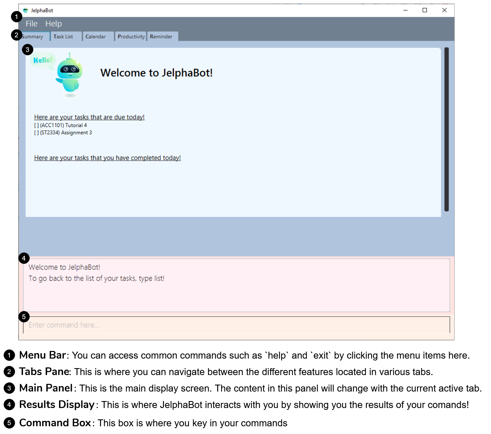

By: Team 2103T-F09-02 Since: Jan 2020 Licence: MIT
- 1. Introduction
- 2. Quick Start
- 3. Features
- 3.1. Common commands
- 3.2. Summary (Eden)
- 3.3. Task Management (Yao Jie)
- 3.3.1. Reading the Task List
- 3.3.2. Adding a Task:
add - 3.3.3. Listing all Tasks :
list - 3.3.4. Locating Tasks by name:
find - 3.3.5. Editing a Task :
edit - 3.3.6. Completing a Task :
done - 3.3.7. Deleting a Task :
delete - 3.3.8. Clearing all Tasks :
clear - 3.3.9. Showing completed Tasks :
show-completed(Eden) - 3.3.10. Showing incomplete Tasks:
show-incomplete(Eden) - 3.3.11. Pinning Important Tasks :
pin[Coming in V2.0] (Yao Jie) - 3.3.12. Sorting Tasks :
sort[Coming in V2.0] (Yao Jie)
- 3.4. Calendar (Amanda)
- 3.5. Productivity Tracking (Jel)
- 3.6. Set Reminders (Dian Hao)
- 3.7. Colour-coded module codes [Coming in V2.0]
- 4. FAQ
- 5. Command Summary
1. Introduction
Welcome to JelphaBot!
This user guide is written for new and experienced users of Jelphabot. This guide will equip you with the basics so that you can quickly enjoy and master the features offered.
If this is not your first time using JelphaBot, you can refer to Section 2, “Quick Start” section to get started right away!
1.1. What is JelphaBot?
JelphaBot is a desktop app for managing tasks specially designed by and for NUS students that allows you to recognise important tasks at a glance so that you can prioritise commitments and manage your time.
You can enter commands in JelphaBot through a Command Line Interface (CLI), which means that if you can type quickly, JelphaBot can help you get work done faster than a traditional mouse-controlled Graphical User Interface (GUI), while still retaining the benefits of a beautiful user interface.

1.2. Overview of features
The main features of JelphaBot are split into five tabs.
-
Summary - Summary of the updates to your task list over the past day.
-
Task List - View and manage tasks in your task list.
-
Calendar - View your schedule on a specific day or within a specific month.
-
Productivity - Track your overall productivity through metrics such as task completion rate.
-
Reminder - Set and manage your upcoming reminders.
Each tab provides a specific feature aimed to help you manage your tasks and deadlines more productively!
Interested? Jump to the Section 2, “Quick Start” to get started. Enjoy!
1.3. Using this User Guide
This User Guide is filled with information to help you set up and make the best out of you very own JelphaBot! You will be able to learn more about the commands that are available for you, together with examples of how they are used. These commands are also consolidated in Section 5, “Command Summary” for your convenience.
1.3.1. Notation used in this Guide
To aid in your understanding throughout this User Guide, you may find below the different symbols and formatting used throughout this guide. We have also provided hyperlinks to help you navigate between related sections.
Symbol |
What does it mean? |
|
Command that can be typed into the command box |
Key |
A Key that you should press on your keyboard |
Tips and tricks that might be useful |
|
Additional information that is good to know |
|
Important pointers to take note |
|
Link to another section or website |
2. Quick Start
-
Ensure you have Java
11or above installed in your Computer. -
Download the latest
jelphabot.jarhere. -
Copy the file to the folder you want to use as JelphaBot’s home folder.
This is important because it decides where your information is saved!
Ensure that JelphaBot has write permissions to that folder. -
Double-click the file to start the app. The GUI should appear in a few seconds.
JelphaBot should initialize with a sample list of tasks as shown in the following diagram.Upon running JelphaBot, you will see various components on it’s main display screen. The components of the main screen is labelled below.
Figure 2. Expected result after running JelphaBot -
Some commands should already be present in JelphaBot.
JelphaBot is initialized with a sample list of tasks, to test if you installed JelphaBot correctly!
If you do not see this, please try deleting JelphaBot and its accompanying files and folders and repeat steps 2 to 4. -
Type a command in the command box and press Enter to execute it.
e.g. typinghelpand pressing Enter will open the help window. To start entering your own commands, useclearto reset JelphaBot. -
Some example commands you can try:
-
add d/Assignment 1 dt/10-Mar-2020 23 59 m/CS2103T:
adds a task with description "Assignment 1" to the task list. -
list: lists all tasks. -
delete 1: deletes the 1st task shown in the current list. -
exit: exits the app.You can use the UP and DOWN keys to view your last entered commands,
and Ctrl + Tab to nagivate to the next tab quickly!
-
Refer to Section 3, “Features” to learn about how each command can help you.
A summarized list of commands is available here.
We hope you have a great time using JelphaBot!
3. Features
In this section, you can find details about the commands that JelphaBot supports. These include the function of the command, its format, and example usages.
For easier naviagation, this guide will go through features according to the order of tabs shown on the User Interface.
3.1. Common commands
3.1.1. Viewing help : help
If you can’t recall the command you need, you can enter the help command in any panel.
A help window will appear with a link to this user guide.
Format: help
help3.1.2. Exiting the program : exit
You can exit the program anytime by entering the exit command directly from any panel.
Format: exit
3.1.3. Switching between tabs
You can switch between tabs anytime by pressing Ctrl + Tab on your keyboard to move to the next tab on the right. If you are already on the rightmost tab, it wraps around to the leftmost tab. You can also move to tabs directly by using the respective shortcut commands. These make JelphaBot easier to use for experienced users. Easily remember command shortcuts by checking the bolded letter in the title of every panel!
| Command | Tab switched to |
|---|---|
|
Summary |
|
Task List |
|
Calendar |
|
Productivity |
|
Reminder |
3.2. Summary (Eden)
This tab will be the first panel you see after entering JelphaBot!
This section gives you a minimalistic overview of the day, namely tasks that you have due within the day, and tasks that you have completed within the day! Tasks displayed will only have it’s module code as well as their description for simplicity!
3.2.1. Viewing the summary tab: summary
You can enter the summary command or its shortcuts :S or :s to manually switch to the summary tab.
The summary panel will then display a summary of your tasks due and completed today.
Format: summary
Shortcut: :S or :s
summarySummary panel shows the tasks that are Due Today, and Completed Today.
Once a task under the Due Today header is marked as done, it will appear under the Completed Today tab.

3.3. Task Management (Yao Jie)
JelphaBot allows you to track and manage your tasks comprehensively as well!
You can view and sort all your tasks from the Task List page.
You can enter the list command or its shortcuts :T or :t to instantly switch to the task list tab.
The task list panel will then display all your tasks sorted into various categories.
Format: list
Shortcut: :T or :t
list3.3.1. Reading the Task List
The task list is formatted so that you can distinguish urgent tasks at first glance. The start of every task is labelled with a module code so that you can visually categorize them. Tasks are tagged according to their importance:
-
Default priority
-
High Priority tasks will be bolded to denote important tasks.
-
Low priority tasks will be italicized to denote optional tasks.
The start of every task will be labelled with a module code so that you can visually categorize them.
Go here to read more about adding tasks with priority and here for editing task priority.
Command Format for Task list commands
-
Parts of the command in
UPPER_CASErepresent command parameters that have to be supplied by you.
e.g. inadd d/DESCRIPTION,DESCRIPTIONrepresents a field where you can provide the appropriate description, such asadd d/Assignment 1. -
Parameters in square brackets are optional e.g
d/DESCRIPTION [p/PRIORITY]can be used asd/Assignment 1 p/0or asd/Assignment 1. -
Parameters with a trailing
…can be used as many times as you want, or can also be omitted.
e.g.[t/TAG]…can be used once ast/project, or multiple times liket/project t/graded, and so on. -
Parameters can be in any order e.g. if the command specifies
d/DESCRIPTION p/PRIORITY,p/PRIORITY d/DESCRIPTIONis also acceptable.
3.3.2. Adding a Task: add
You can add new tasks to your task list in JelphaBot with the add command. This allows you to update your task lists with new tasks whenever they arise.
Format: add d/DESCRIPTION dt/DATETIME m/MODULE_CODE [p/PRIORITY] [t/TAG]…
add d/Assignment 1 dt/Jan-01-2020 23 59 m/CS1231 t/graded|
Format of the month in DATETIME (MMM) input has to have the first letter in upper-case. E.g Mar instead of mar when specifying the month of March.
|
Examples:
-
add d/Assignment 1 dt/Jan-01-2020 23 59 m/CS3230 p/1 -
add d/Project TP dt/Jan-01-2020 23 59 m/CS2103T p/1 t/pair t/work
|
A task can have any number of tags (including 0)! If the priority field is not specified, priority is set to Default priority. |
3.3.3. Listing all Tasks : list
JelphaBot allows you to list all your current tasks. In order to make it easier for you to view and use JelphaBot, you can group your tasks by some categories. These categories can be specified through optional arguments.
Format: list [GROUPING_CATEGORY]
Grouping Tasks by Date : list date
You can group tasks based on their due date.
This is also the default interface for the task list tab.
Format: list date
list datelist date allows you to group your tasks into the following categories:
-
Pinned [Coming in V2.0]
(Pinned tasks will always be displayed at the top. To read more about pinning tasks, go here) -
Overdue
(Shows tasks which are past their due date) -
Due Today
(Shows tasks not overdue and due by the end of the current day) -
Due This Week
(Shows tasks due within the next seven days) -
Due Someday
(Shows all other tasks that do not fit into prior categories)
These categories are arranged to make it easier for you to see what is immediately due. By moving tasks that are due soon to the top of the list, you can decide what to focus your time on.
Grouping Tasks by Module : list module
You can also group your tasks based on their module code.
Format: list module

list moduleThis grouping allows you to manage your time by tracking the amount of time spent on each module. You can also see which modules are more intensive or have upcoming projects or assignments due.
3.3.4. Locating Tasks by name: find
You can find tasks in your task list with description containing any of the given keywords.
Format: find KEYWORD [MORE_KEYWORDS]
find tutorialExamples:
-
find assignment
ReturnsAssignment 1andassignment task -
find Tutorial Project MidTerm
Returns any task having descriptions ofTutorial,Project, orMidTerm
3.3.5. Editing a Task : edit
If there are changes to existing tasks in JelphaBot, you can edit it with the edit command.
Format: edit INDEX [d/DESCRIPTION] [dt/DATETIME] [m/MODULE_CODE] [p/PRIORITY (-1, 0, or 1)] [t/TAG]…
edit 1 m/CS2105 d/Tutorial 2Examples:
-
edit 1 m/CS2105 d/Tutorial 2
Edits the Module Code of the first task toCS2105and Description toTutorial 2. -
edit 2 dt/Jan-2-2020 23 59 t/
Edits the Date and Time of the second task to beJan-2-2020 23 59and clears all existing tags.You can remove all the task’s tags by typing t/without specifying any tags after it.
3.3.6. Completing a Task : done
When you complete a task, you can mark the corresponding task as done in JelphaBot. The task’s status will automatically be updated in the display.
Format: done INDEX
done 13.3.7. Deleting a Task : delete
If you no longer need a task stored in JelphaBot, you can delete it with the delete command.
Format: delete INDEX
delete 1Examples:
-
list
delete 2
Deletes the 2nd task in the task list. -
find Betsy
delete 1
Deletes the 1st task in the results of thefindcommand.
3.3.8. Clearing all Tasks : clear
If you want to reset JelphaBot and start over, you can use the clear command.
This command will delete all existing Tasks and Reminders from JelphaBot.
Format: clear
clear3.3.9. Showing completed Tasks : show-completed (Eden)
You can keep a log of all the tasks that have been completed with the show-completed command.
show-completedThe figure above shows a task list with a single task completed.
If you do not have any currently complete tasks, the displayed list will be empty and a message will be shown telling you that you currently do not have any completed tasks!
show-completed, if the task list does not have any completed tasksThe corresponding message is shown in the Results Display.
3.3.10. Showing incomplete Tasks: show-incomplete (Eden)
You can display all the tasks in your task list that are currently incomplete, so that you can see what you should do next.
show-incompleteIn the example above, there are many overdue tasks. The task list can be further scrolled to view all the tasks.
If you do not have any tasks that are incomplete in your task list, the displayed list will be empty and a message will be shown telling you that you currently do not have any incomplete tasks!
show-incomplete, if the task list does not have any incomplete tasksThe corresponding message is shown in the Results Display.
3.3.11. Pinning Important Tasks : pin [Coming in V2.0] (Yao Jie)
You can pin important tasks to the top of the task list with the pin command.
Pinned tasks will always be displayed in the Pinned Tasks group in the task list.
Trying to pin a task that is already pinned will unpin it.
3.3.12. Sorting Tasks : sort [Coming in V2.0] (Yao Jie)
You can change how tasks are sorted with the sort command.
Format: sort SORTING_ORDER
Valid SORTING_ORDER values include date, module, and priority.
3.4. Calendar (Amanda)
JelphaBot also comes with a built-in calendar view that allows you to view your overarching tasks due on a monthly basis. Dates that have tasks due would have a dot indicator shown on the calendar. You would also be able to navigate to specific dates to view your tasks due for that day of the month!
3.4.1. Viewing your calender : calendar
You can enter the calendar command or its shortcuts :C or :c to manually switch to the calendar tab.
The calendar panel will then show you your schedule for the current month with today’s date highlighted.
Format: calendar
Shorcut: :C or :c
calendar| Highlighting of Dates: Today’s date would be highlighted in dark blue, while other dates would be in light blue. |
3.4.2. Changing month and year view of your Calendar : calendar
You can navigate the calendar panel to another month and year by specifying it. The calendar panel would be updated accordingly
while highlighting the first day of the month.
The task list panel on the left will display the tasks due on the first day of the month.
Format: calendar MONTHYEAR
Examples:
-
calendar May-2020

calendar May-2020This command should displays the calendar for the month of May in the year 2020 in the calendar panel (on the right) and display the corresponding tasks due for 1-May-2020 in the task list (on the left).
|
Format of the month in MONTHYEAR (MMM) input has to have the first letter in upper-case. E.g Mar instead of mar when specifying the month of March.
|
| Dot indicator showing tasks: Dates that have more than 3 tasks due would have a red dot indicator, while dates with at least 1 task but less than 4 tasks due would be represented with a green dot indicator. |
3.4.3. Showing tasks due on a specific date : calendar
Displays the tasks due on specified date, while highlighting that day on the calendar
Format: calendar DATE
Examples:
-
calendar Apr-11-2020 -
calendar Apr/11/2020

calendar Apr-11-2020This command should highlight the 11th of April in the calendar panel (on the right) and display the corresponding tasks due in the task list (on the left).
3.4.4. Navigating directly to today’s date on Calendar : calendar
You can directly navigate to the current day’s date in the calendar view.
Format: calendar today
Examples:
-
calendar today

calendar today on 12th April, 2020This command will display the corresponding calendar for this month and highlight today’s date in the calendar panel (on the right). The task list panel also will display the corresponding tasks due today (on the left).
3.5. Productivity Tracking (Jel)
JelphaBot automatically tracks your productivity within the day, and displays a progress bar which allows you to track the completion progress of the tasks which are due in the coming week. You can see the progress bar fill up as you complete more tasks.
JelphaBot also dynamically provides feedback in response to your achievements and task completion rate. Hopefully, this would make you even more productive by encouraging you to get more done!
3.5.1. Tracking your productivity : productivity
You can enter the productivity command or its shortcuts :P or :p to manually switch to the productivity tab.
The productivity panel will then show you your productivity for the day.
Format: productivity
Shortcut: :P or :p

productivity| The progress bar and the text following it only shows tasks that are due within the week JelphaBot is running. |
3.5.2. Starting the timer for a task : start
You can start a timer for your task.
Format: start INDEX
start 13.5.3. Stopping the timer for a task : stop
You can stop a running timer for your task.
Format: stop INDEX
stop 1| Exiting the application before stopping any running timer wil cause all recorded time since the timer was started to be lost. |
3.6. Set Reminders (Dian Hao)
JelphaBot allows you to set reminders for tasks and manage your tasks comprehensively! You can view all your existing reminders from the reminders tab.
3.6.1. Viewing your reminders : remindertab
You can enter the remindertab command or its shortcuts :R or :r to manually switch to the reminder tab.
The reminder panel will then show all the reminders that you have set.
Format: remindertab
Shortcut: :R or :r

remindertabEvery Reminder will show the Task `s module code, description, due date, the days that will be reminded before the deadline, and the hours that will be reminded before the deadline.
3.6.2. Adding reminder : reminder
You can add a reminder to your specified task to remind yourself of the task if the current time is within the time-frame specified by you.
Format: reminder INDEX days/DAYS hours/HOURS

reminder 1 days/1 hours/1reminder 1 days/1 hours/13.6.3. Removing reminder : delrem
If you would like for a task’s reminder to be deleted, you can use the delrem command to remove the reminder of that task.
Format: delrem INDEX
delrem 1delrem 13.6.4. Reminding you with a popup notification
Whenever you start up JelphaBot after adding your reminders, JelphaBot’s reminder window will popup. The popup will show a list of tasks that will be overdue soon, and tasks that are past their deadline but have not been completed.

3.7. Colour-coded module codes [Coming in V2.0]
Users can customise the font colours of different modules to better distinguish between different tasks. The module codes displayed in the Main Window will be similar to the tags displayed to make it easier for users to view them.
4. FAQ
Q1: Is JelphaBot free?
A: Yes, JelphaBot is completely free to use!
Q2: How do I transfer my data to another Computer?
A: Install the app in the other computer and overwrite the empty data file it creates with the file that contains the data of your previous JelphaBot folder.
Q3: How do I save my data?
A: JelphaBot automatically saves your data whenever you make a change.
There is no need to save manually.
Q4: Can I add multiple tasks using a command line?
A: Sorry, we currently do not support this feature.
We will consider this in v2.0.
Q5: How do I add tasks with no deadline or description?
A: Sorry, we currently do not support task entries with no deadline or descriptions.
We will consider this in v2.0.
Q6: Do I need an Internet connection to use JelphaBot?
A: No, you don’t.
JelphaBot works completely offline.
5. Command Summary
-
Help:
help -
Summary:
summaryor:sor:S -
Add
[d/DESCRIPTION] [dt/DATETIME] [m/MODULE_CODE] [p/PRIORITY] [t/TAG]…
e.g.add d/Project TP dt/Jan-01-2020 23 59 m/CS2103T p/1 t/pair work -
List:
listor:tor:T -
List by Date:
list date -
List by Modules:
list module -
Find:
find KEYWORD [MORE_KEYWORDS]
e.g.find Tutorial Assignment -
Edit:
edit INDEX [d/DESCRIPTION] [dt/DATETIME] [m/MODULE_CODE] [p/PRIORITY] [t/TAG]…
e.g.edit 1 m/CS2105 d/Tutorial 2 -
Done:
done INDEX
e.g.done 1 -
Delete:
delete INDEX
e.g.delete 3 -
Clear:
clear -
Exit:
exit -
Show Completed Tasks:
show-completed -
Show Incomplete Tasks:
show-incomplete -
Add Reminder:
reminder INDEX days/DAYS hours/HOURS
e.g.reminder 2 days/1 hours/1 -
Delete Reminder:
delrem INDEX
e.g.delrem 2 -
View Reminders:
remindertabor:ror:R -
Productivity:
productivityor:por:P -
Timer:
start INDEXorstop INDEX
e.g.start 1orstop 1 -
Calendar:
calendaror:cor:C -
Calendar Date:
calendar DATE
e.g.calendar Jan-1-2020 -
Change Calendar View:
calendar MONTHYEAR
e.g.calendar Apr-2020 -
Today’s Calendar View:
calendar today